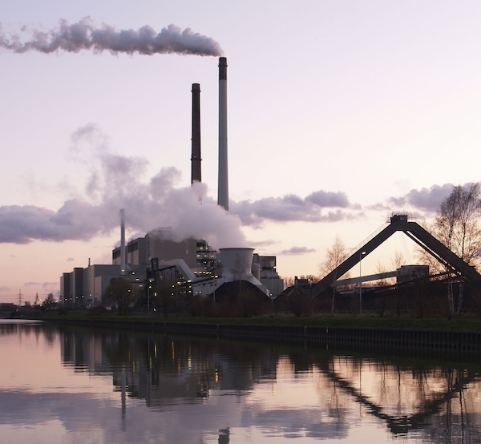
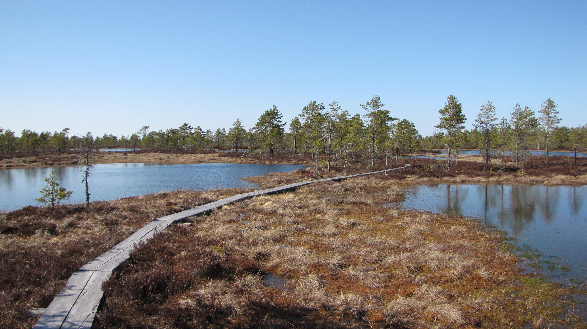

Hallitus suunnittelee kivihiilen käytön kieltämistä lailla vuoteen 2030 mennessä.

Tätä perustellaan hallitusohjelmalla ja ympäristötavoitteilla, mutta kuitenkin hallitus suunnittelee korvaavansa kivihiiltä turpeella, joka on kivihiiltä saastuttavampi vaihtoehto.

Kivihiilen käyttö vähenee jatkuvasti, kun samaan aikaan uusiutuvat energiamuodot kehittyvät. On hyödyllisempää investoida uusiin innovaatioihin ja uusiutuvien energiamuotojen kehittämiseen, kuin vaihtaa edullinen ja vakaa kivihiili suot tuhoavaan turpeeseen.